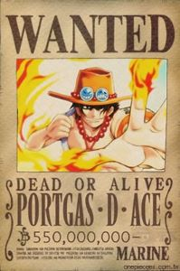
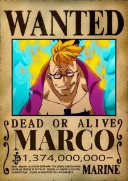
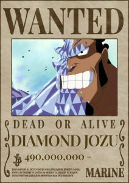
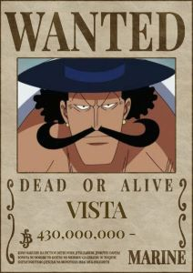

<div class="container">
  <article>
    <h1>Edward Newgate - Barba Branca</h1>
    
    <p>
      Edward Newgate, também conhecido como Barba Branca, foi um dos Yonkou em
      One Piece e o capitão dos Piratas do Barba Branca. Seu sonho era encontrar
      uma família, um lugar onde ele pertencesse verdadeiramente, ele buscava
      criar um grupo unido e forte. Ele era conhecido por sua incrível força e
      liderança carismática. Barba Branca era visto como uma figura paterna por
      muitos piratas e tinha grande respeito e lealdade de sua tripulação. Sua
      morte durante a Guerra de Marineford marcou um ponto crucial na história,
      deixando uma lacuna imensa no mundo dos piratas.
    </p>

    <h2>Gura Gura no Mi</h2>
    
    <p>
      É uma Fruta do Diabo do tipo Paramecia, e é conhecida como a Fruta do
      Terremoto. A Gura Gura no Mi concede ao usuário a capacidade de criar e
      controlar terremotos e tremores de terra. Isso inclui a habilidade de
      gerar ondas de choque poderosas que podem abalar a terra e o mar, criando
      terremotos devastadores e até mesmo tsunamis, além disso, seu poder para
      destruir estruturas, desestabilizar o terreno e até mesmo manipular o
      campo de batalha em seu favor, criando obstáculos para seus oponentes ou
      abrindo brechas para ataques devastadores.
    </p>

    <h2>Bando do Barba Branca</h2>
    
    <p>
      Os Piratas do Barba Branca, liderados por Edward Newgate (Barba Branca),
      são uma das tripulações mais poderosas e respeitadas no mundo de "One
      Piece." Conhecidos pela sua força esmagadora e disciplina, a tripulação é
      organizada em divisões comandadas por oficiais leais. Barba Branca,
      possuidor da Gura Gura no Mi, é considerado o "Homem Mais Forte do Mundo"
      e atua como uma figura paterna para seus membros, que ele trata como
      filhos.
    </p>
    <p>
      A tripulação valoriza lealdade e proteção, operando como uma família unida
      e defendendo seus territórios com ferocidade. A participação na Guerra de
      Marineford destacou sua força e compromisso, apesar de resultar na morte
      de Barba Branca. Mesmo após sua queda, o legado dos Piratas do Barba
      Branca continua a influenciar o mundo de "One Piece."
      <br />
      <br />
      Seus principais membros são:
    </p>

    <div class="imediatos">
      
      
      
      
    </div>
  </article>
</div>
